risorse | monitoraggio consumi con emoncms
L'obiettivo di questo esperimento è quello di monitorare l'andamento temporale dei consumi di una pompa di calore impiegando un contatore elettronico di energia elettrica monofase con uscita a impulsi.
Il contatore di energia DDS238-1 misura il consumo di energia attiva in un impianto a 220V:
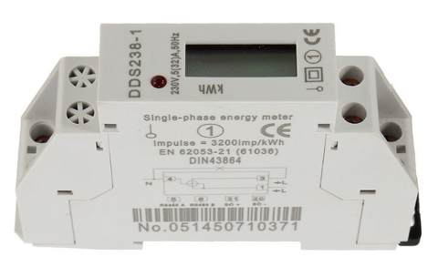Il contatore DDS238-1 usato per l'esperimento
Il contatore va inserito sul conduttore di fase a monte del carico da monitorare; è dotato di un'uscita a impulsi per la gestione remota della contabilizzazione dell'energia:
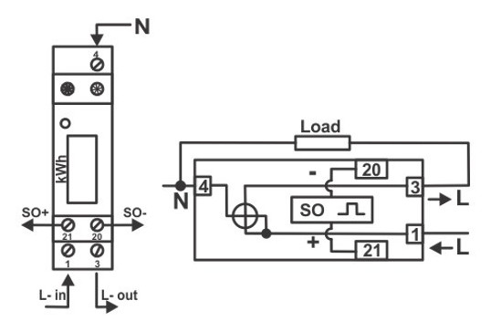Lo schema elettrico riportato nel manuale utente
La struttura interna del contatore può essere così schematizzata:
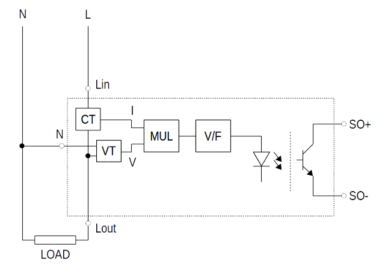Schema a blocchi del contatore
Due convertitori, uno di corrente (CT) e uno di tensione (VT), trasformano i valori di corrente e tensione alternata che insistono sul carico in tensione continua; un moltiplicatore determina il prodotto dei due voltaggi e il risultato è passato ad un convertitore tensione/frequenza. Il segnale impulsivo pilota un LED accoppiato ad un fototransistor che satura in corrispondenza ai lampeggi del LED. La durata di un singolo impulso e il numero di impulsi generati per ogni kWh consumato si ricavano dal data-sheet del contatore:
TECHNICAL SPECIFICATION
STANDARD IEC 62053-21(IEC61036)
NOMINAL VOLTAGE 120/220/230/240v ±10%
BASIC CURRENT (Ib2) 5A
MAXIMUM CURRENT 32A
MINIMUM CURRENT 0.02A
FREQUENCY 50Hz or 60Hz
CONSUMPTION <2W/10VA
ACCURACY CLASS 1
DISPLAY MECHANICAL 5+1 DIGITS
LCD 5+1 or 6+1 DIGITS
INTERFACE OPEN COLLECTOR OUTPUT (SO)
18~27V 27MA
IMPULSES IMPULSES LENGTH≥30ms
(as per DIN43684)
SERVICE TEMPERATURE LIMIT: -25°C +55°C
L.E.D. 1 COLOUR
NORMAL OPERATION
PINK FLASHING RATE PROPORTIONAL TO LOAD
(1000imp/kWh)
emond (Smart energy monitor device software for Emoncms) è un modulo software C in grado di estrapolare le misure di energia consumata dalla sequenza di impulsi generati da un contatore digitale per poi inviarle a un'instanza di Emoncms, un'applicazione web il cui scopo è elaborare, memorizzare e visualizzare questa tipologia di dati. emond gira su Raspberry Pi e si interfaccia al contatore digitale tramite due pin della porta GPIO. Poiché esiste una versione di Emoncms specifica per Raspberry Pi, e avendone una a disposizione (una Raspberry Pi 3 Mod. B per la precisione), ho deciso fare qualche prova in merito.
Per iniziare ho scaricato l'immagine per Raspberry Pi dal sito ufficiale. L'ultima, recentissima (17/10/2019), è disponibile qui. Ho usato Win32 Disk Imager per trasferire l'immagine su una SD card da 16GB. Come da istruzioni ho collegato la Raspberry Pi al router che governa la rete locale con un cavo Ethernet. Le credenziali per il login sono pi/emonpi2016 (quelle per l'accesso ai vari servizi installati in questa distribuzione - MySQL, MQTT, … - sono riportate in una pagina dedicata).
Nella documentazione ufficiale si legge:
Important: on the first ever boot of a fresh emonSD the system will run some automatic updates to update Emoncms and emonPi firmware, it's very important this process is not interrupted. On first boot please ensure an Internet connection (Ethernet ideally) and then leave the system for at least 10min before switched or rebooting. See ~/data/emonpiupdate.log if you want to view the update log to check if it's finished.
A me questo non è successo: non c'è stato alcun aggiornamento del software e il file di log citato non è stato creato. Nemmeno il passaggio successivo consigliato:
$ sudo emonSDexpand
ha avuto esito positivo. Questo tuttavia non ha pregiudicato il funzionamento del sistema.
Poiché può tornare utile (e di fatto lo è stato), ho abilitato l'ssh:
$ cd /boot $ sudo touch ssh
Emoncms a questo punto è raggiungibile all'indirizzo http://<raspberrypi-ip>/ da qualunque dispositivo connesso alla rete locale. L'IP assegnato alla Raspberry Pi è ricavabile direttamente dal terminale con il comando ifconfig oppure consultando il router, se quest'ultimo lo permette.
Conclusa l'installazione Emoncms è già in grado di ricevere dati dai sensori; per ogni dato ricevuto l'applicativo crea un nuovo input nell'omonima pagina. Nella terminologia di Emoncms un input rappresenta una sorgente di dati che può eventualmente essere storicizzata in uno o più feed, che rappresentano invece dei campionamenti dei valori di un input.
La distribuzione di Emoncms che ho installato è corredata di alcuni moduli aggiuntivi, tra i quali Device. Un device rappresenta un dispositivo fisico in grado di fornire uno o più valori di energia (istantaneo, giornaliero, mensile, …) e/o valori associati a grandezze diverse (energia, temperatura, umidità, …); in Emoncms i device sono utilizzati per aggregare più input provenienti da un unico apparato di misura.
Per creare un nuovo device si accede alla pagina Input e si preme il pulsante New device; a questo punto è sufficiente compilare la maschera che appare selezionando il tipo di dispositivo fisico associato al device (Split Single Phase Meter nel mio caso) e indicando l'identificativo numerico attribuito all'apparato di misura (1). Completare il modulo indicando il nome simbolico del nodo (heatpump) e il luogo di installazione (home).
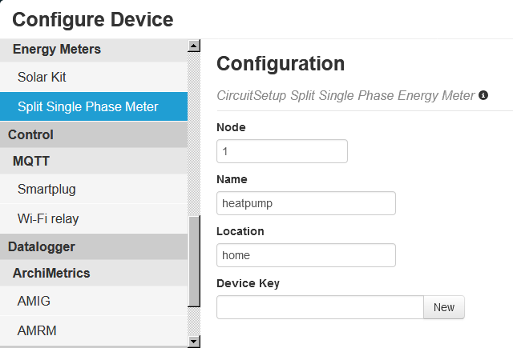Definizione del device associato al contatore
Prima di proseguire con la configurazione di Emoncms conviene installare il modulo di interfaccia del contatore emond.
Occorre dapprima installare le dipendenze del modulo:
$ sudo apt-get install wiringpi $ sudo apt-get install libcurl4-gnutls-dev
Si procede quindi con lo scaricamento del repository git dei sorgenti, dopodiché si avvia la compilazione del modulo e si termina con l'installazione del servizio:
$ git clone https://github.com/ondrej1024/emond $ cd emond $ make $ sudo make install
Se si ha intenzione di collegare il display LCD supportato da emond alla porta GPIO della Raspberry Pi è necessario scaricare un modulo supplementare:
$ sudo apt-get install lcdproc
La configurazione è contenuta nel file /etc/emon.config; la sezione counter definisce le proprietà intrinseche del contatore. I valori vanno impostati in funzione delle specifiche fornite dal costruttore, nel mio caso:
... [counter] pulse_input_pin = 25 # BCM pin number used for pulse input from energy meter wh_per_pulse = 1 # Wh per pulse (from the Energy meter setting) pulse_length = 30 # pulse length (in ms), leave blank for auto detection max_power = 3300 # max possible power (in W) provided by energy company
La sezione webapi contiene l'indirizzo dell'API di Emoncms preposta alla ricezione dei valori generati dal contatore, la frequenza massima di aggiornamento e il numero del nodo assegnato al contatore:
... [webapi] api_base_uri = http://127.0.0.1 # Public EmonCMS server api_key = ... # Personal EmonCMS API key api_update_rate = 30 # min delay (in s) between 2 API requests node_number = 1 # Identifier of your node in EmonCMS
Il valore del parametro api_key si ricava dalla sezione Apikey authentication della pagina Input API Help, raggiungibile dalla pagina Input dell'applicativo web. Copiare la chiave Read & Write, quella di sola lettura non è sufficiente:
La chiave per l'invio dei valori di input
Stando alla documentazione ufficiale se emond è installato nella stessa macchina che ospita Emoncms l'uso della chiave non è obbligatorio:
To post data from a remote device you will need to include in the request url your write apikey. This give your device write access to your emoncms account, allowing it to post data.
D'altra parte emond la richiede, e per questa ragione la ricopio nel file di configurazione.
Il servizio di monitoraggio del contatore si avvia con il comando:
$ sudo service emon start
Per fare in modo che il servizio venga avviato automaticamente all'accensione:
$ sudo update-rc.d emon defaults
Nella pagina principale del progetto emond si legge:
The cabling has to be done as follows:
- S0- output on energy meter to GND on RaspberryPi
- S0+ output on energy meter to GPIO[x] on RaspberryPi
No external pullup resistor for the S0+ line is required as the RPi internal pullup will be enabled by the software.
Il collegamento è quindi diretto: bastano due conduttori. La resistenza di pull-up a protezione del fototransistor è fornita direttamente dalla scheda mediante un'opportuna configurazione del pin di ingresso della GPIO attuata da emond.
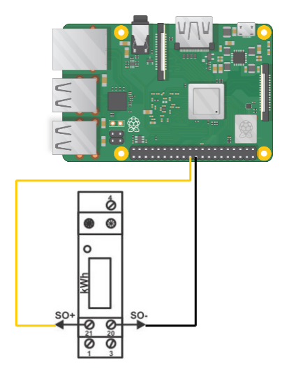Schema di collegamento del contatore alla Raspberry Pi
Occorre a fare attenzione perché la numerazione dei pin della porta GPIO della Raspberry Pi 3 Mod. B è tutt'altro che intuitiva: per esempio il pin GPIO 25 è cablato sul pin n. 22 della porta, l'undicesimo della fila esterna contando dal bordo.
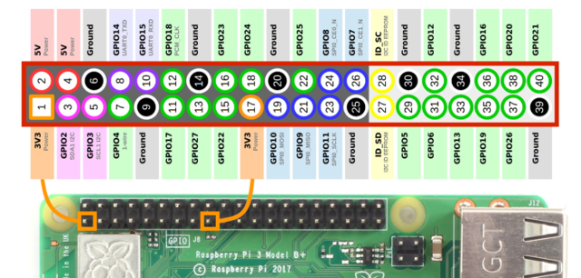Pinout della GPIO della Raspberry Pi 3 Mod. B
emond registra sul syslog eventuali problemi riscontrati durante il suo funzionamento; ad esempio, tentando di simulare a mano una sequenza di impulsi cortocircuitando brevemente i due connettori collegati alla porta GPIO ho ottenuto il seguente risultato:
$ tail -f /var/log/syslog Nov 27 20:58:30 emonpi emond[3142]: Detected starting pulse out of sequence Nov 27 20:58:30 emonpi emond[3142]: Detected starting pulse out of sequence Nov 27 20:58:30 emonpi emond[3142]: Detected starting pulse out of sequence Nov 27 20:58:30 emonpi emond[3142]: Detected starting pulse out of sequence Nov 27 20:58:30 emonpi emond[3142]: Detected invalid pulse (length=56 ms) Nov 27 20:58:30 emonpi emond[3142]: Detected ending pulse out of sequence Nov 27 20:58:30 emonpi emond[3142]: Detected ending pulse out of sequence Nov 27 20:58:30 emonpi emond[3142]: Detected ending pulse out of sequence ...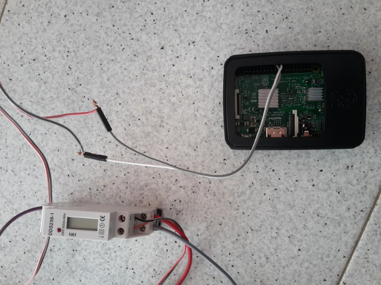
Il circuito approntato per il test
emond invia a Emoncms tre valori: il conteggio degli impulsi generati dal contatore dall'ultimo invio diviso per l'intervallo di tempo trascorso (consumo istantaneo), il conteggio degli impulsi a partire dalla mezzanotte (energia consumata nella giornata corrente) e quello degli impulsi a partire dalla mezzanotte del primo giorno del mese (energia consumata nel mese corrente). Se il parametro wh_per_pulse è impostato correttamente i valori di potenza risultano essere espressi in W, quelli di energia in Wh. I dati sono inviati a Emoncms per mezzo dell'API /input/post.json nel formato JSON like. La richiesta viene trasmessa sfruttando libcurl e assume la seguente forma:
<api_base_uri>/input/post.json?
apikey=<api_key>
&node=<node_number>
&json={power:...,energy_day:...,energy_month:...}
I valori tra parentesi angolate sono quelli ricavati dal file di configurazione.
Se il contatore è stato cablato correttamente e il servizio di monitoraggio è in esecuzione la pagina Input mostra l'ultimo valore ricevuto da emond e il tempo trascorso da quando questo è stato ricevuto (in verde se ricevuto da non più di 25 secondi, arancio se ricevuto da non più di un minuto, rosso altrimenti).
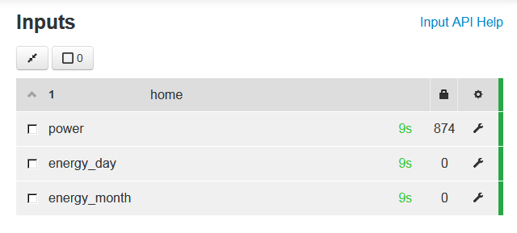Pagina degli input
Come già accennato più sopra, per costruire una serie storica a partire da un input è necessario introdurre un nuovo feed. Per crearne uno è necessario accedere alle proprietà dell'input che si intende serializzare selezionando l'Input Config Spanner (l'icona a forma di chiave inglese) posta all'estrema destra. Apparirà così la maschera di definizione del feed:
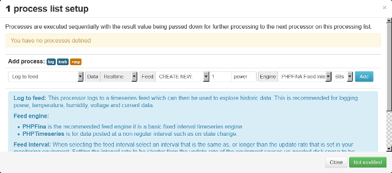Maschera di definizione di un feed
Occorre a questo punto selezionare il processo Log to feed e stabilire la modalità di campionamento dell'input. Nel mio caso ho scelto un campionamento a frequenza costante (PHPFINA Fixed Interval) con un periodo pari o superiore a quello impostato per il servizio emond, nella fattispecie un minuto (60s).
Dopo qualche tempo, nella pagina del feed appena definito (raggiungibile selezionandolo dall'elenco di tutti i feed definiti presente nella pagina Feeds) sarà possibile verificare l'andamento temporale dei consumi:
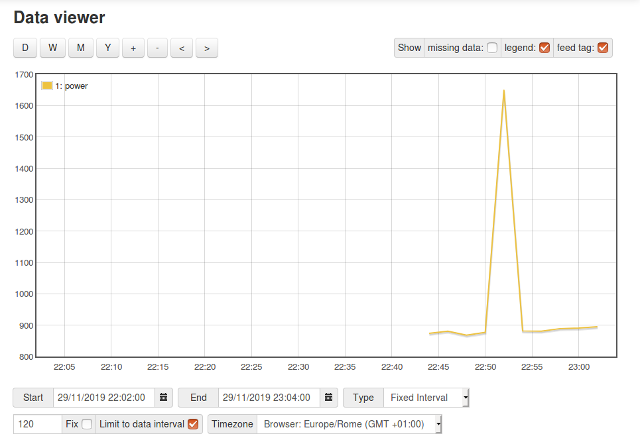Andamento temporale dei consumi
Da questa pagina è possibile scaricare i dati utilizzati per popolare il grafico (attenzione: non quelli effettivamente salvati!) in formato CSV. Il download dei dati storici reali (Full Export nella terminologia Emoncms) è disponibile nella pagina Feeds, selezionando il feed di interesse e premendo il pulsante Download:
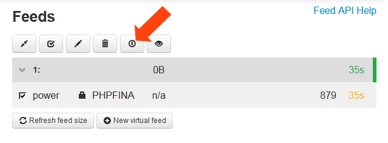Il pulsante di scaricamento dei dati del feed
Per maggiori informazioni circa la natura dei feed fare riferimento alla sezione Log Locally e successive della documentazione ufficiale.
Se Emoncms non riceve alcun dato la causa potrebbe essere che il carico sotto controllo stia richiedendo una quantità di energia al di sotto della soglia di sensibilità del contatore (caso verificatosi tentando di monitorare il consumo di una lampadina LED da 5W): provare a sostituire il carico con un'apparecchiatura più avida di energia (es. stufetta da 1kW). Ciò è dovuto ad una peculiare caratteristica di emond che verifica se è giunta l'ora di inviare a Emoncms il conteggio degli impulsi generati dal contatore solo in corrispondenza al ricevimento di un nuovo impulso: se il carico non consuma a sufficienza il contatore non genererà alcun impulso e emond non avrà modo di inviare i dati a Emoncms. Il parametro api_update_rate è quindi l'intervallo di tempo minimo che intercorre tra due invii successivi: se i consumi sono nulli o prossimi allo zero possono passare ore prima che emond invii nuovi dati a Emoncms.
Un altro problema che ha causato il mancato invio dei dati è stata l'errata configurazione del servizio di monitoraggio, nella fattispecie il valore assegnato al parametro pulse_length. Impostato a 30ms come da specifiche del contatore non permetteva a emond di individuare correttamente gli impulsi generati dal contatore. Il motivo è stato chiaro nel momento in cui ho consultato il syslog:
$ tail -f /var/log/syslog Nov 27 21:17:52 emonpi emond[3142]: Detected invalid pulse (length=87 ms) Nov 27 21:17:52 emonpi emond[3142]: Detected invalid pulse (length=89 ms) Nov 27 21:17:52 emonpi emond[3142]: Detected invalid pulse (length=91 ms) ...
Obiettivamente le istruzioni del contatore dichiarano una una lunghezza di impulso maggiore o uguale 30ms, ma mai mi sarei aspettato, a fronte di quella dicitura, ampiezze prossime 90ms (in rete il valore tipico attribuito al contatore DDS238-1 è 80±5ms). Ho preferito allora non inizializzare quel parametro, in modo da attivare la determinazione automatica della larghezza dell'impulso, cosa che fortunatamente è avvenuta con successo:
... [counter] pulse_input_pin = 25 # BCM pin number used for pulse input from energy meter wh_per_pulse = 1 # Wh per pulse (from the Energy meter setting) pulse_length = # pulse length (in ms), leave blank for auto detection max_power = 3300 # max possible power (in W) provided by energy company
[Aggiornamento 29/01/2020]
Il problema dell'assenza di un RTC è facilmente risolvibile acquistando uno dei vari moduli disponibili in commercio, avendo configurato opportunamente il sistema operativo. Particolarmente adatto allo scopo è l'RTC DS3231, in particolare l'edizione “DS3231 for PI” pensata appositamente per le schede Raspberry Pi mod. 3 e 4:

Il modulo DS3231 for PI
Il modulo va inserito nella porta GPIO come mostrato in figura:
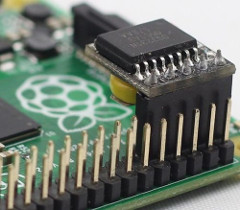Collegamento del modulo DS3231 for PI alla scheda
In rete si trovano vari tutorial che spiegano come configurare emonSD affinché ricavi la data e l'ora dall'RTC, uno tra i più chiari – e quello che in definitiva ho seguito – mi è sembrato Raspberry Pi RTC: Adding a Real Time Clock. Ad ogni buon conto ho tenuto traccia di ogni singolo passaggio eseguito per l'installazione dell'RTC sulla mia Raspberry.
Pagina modificata il 15/12/2019